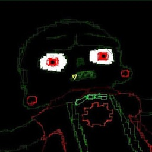

nepsilon0

nepsilon0 (also known as neonskull0) is the creator of this website and a (semi-active) member of PARADISE LOST. He is known for.. creating this wiki and occasionally playing in a session. His timezone is GMT-0 and usually can play in the afternoon. He currently has the only user page on the wiki because making a page on other people isn't done unless they specifically ask for it.
VESSELS AND STATS
NEPSILON
Armor: SEQUELAE
WEAPON: FrayedSword
DESIGN: {none}